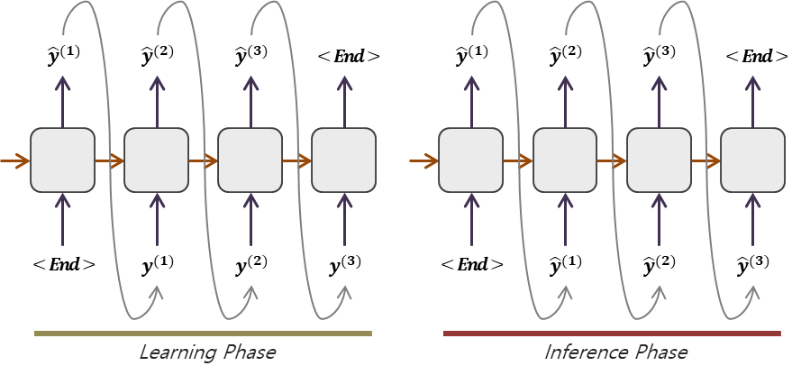
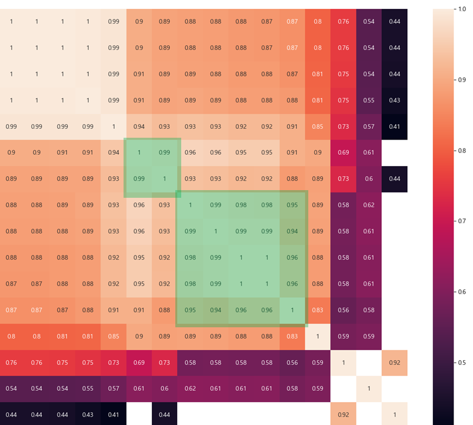
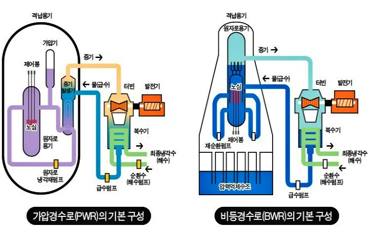
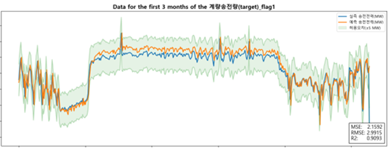
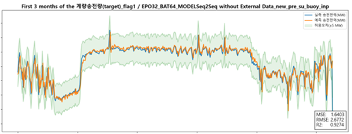

시계열을 번역하다
기계번역을 위해 태어난 인코더-디코더 구조가, 어떻게 미래를 예측하는 일에까지 손을 뻗게 되었나. 문장을 옮기는 일과 미래를 그리는 일은 생각보다 닮아 있다.

미래를 예측하는 일은 문장을 번역하는 일과 닮았다
2014년, 기계번역의 풍경을 바꾼 한 구조가 등장했다. 인코더(encoder)가 입력 문장 전체를 하나의 ‘맥락 벡터(context vector)’로 압축하고, 디코더(decoder)가 그 맥락에서 출발해 목표 언어의 문장을 한 단어씩 풀어내는 — 이른바 Seq2Seq(sequence-to-sequence)다. “나는 사과를 먹었다”라는 한국어 문장을 통째로 읽어 의미의 응축물을 만들고, 그것을 바탕으로 “I ate an apple”을 차례로 생성한다.
이 구조를 처음 접했을 때 필자가 떠올린 것은 번역이 아니라 바다였다. 동해의 수온을 예측하는 과제를 붙들고 있던 무렵이었다. 지난 보름간의 수온·기온·풍속 기록을 읽어 들여, 앞으로 며칠의 수온을 그려 내는 일. 가만히 보면 이것은 번역과 구조적으로 동일하다. 입력은 순서가 있는 시퀀스(과거 관측 구간)이고, 출력도 순서가 있는 시퀀스(미래 예측 구간)다. 한쪽은 단어의 열이고 한쪽은 숫자의 열일 뿐, ‘하나의 정렬된 열을 다른 정렬된 열로 옮긴다’는 골격은 같다.
이 유비(類比)가 강력한 이유는 단순한 비유에 그치지 않기 때문이다. 번역에서 인코더가 문장의 ‘의미’를 압축하듯, 시계열에서 인코더는 입력 구간의 ‘상태’ — 지금 이 계(系)가 어떤 국면에 있는가 — 를 압축한다. 그리고 디코더는 그 상태를 출발점으로 미래를 펼친다. 번역기를 예측기로 바꾸는 데 필요한 것은 어휘 사전을 실수(實數) 공간으로 바꾸는 일뿐, 학습의 문법은 그대로 빌려 올 수 있었다.
Chapter 2. 한계왜 ARIMA와 단일 스텝 LSTM은 흔들리는가
그렇다면 기존 방법들은 무엇이 부족했을까. 시계열 예측의 고전인 ARIMA는 데이터가 정상성(stationarity)을 갖고, 미래가 과거의 선형적 연장이라는 가정 위에 서 있다. 수온이 계절을 따라 완만히 오르내릴 때는 훌륭하다. 그러나 한류와 난류가 부딪히며 며칠 새 수온이 급변하는 국면(regime change), 혹은 폭염·한파가 전력수요 곡선을 비트는 순간 앞에서는 가정 자체가 무너진다.
딥러닝 쪽의 단순한 접근 — 한 스텝씩만 내다보는 LSTM — 도 비슷한 함정에 빠진다. 다음 한 점을 예측하고, 그 예측을 다시 입력에 넣어 그다음 점을 예측하는 식으로 미래를 이어 붙이면, 작은 오차가 단계마다 증폭되어 며칠 뒤에는 곡선이 엉뚱한 곳으로 흘러간다. 더 근본적인 문제는 맥락의 범위다. 단일 스텝 모델은 바로 직전 상태에 과도하게 의존하는 경향이 있어, 입력 구간 전체가 말해 주는 ‘큰 그림’을 놓치기 쉽다.
Seq2Seq의 발상은 여기서 해법을 제시한다. 입력 윈도우 전체를 먼저 하나의 맥락으로 인코딩한 뒤, 미래의 구간(horizon)을 한꺼번에 디코딩한다. 미래를 한 점씩 더듬어 가는 대신, “지금 이 계는 이런 국면에 있다”는 응축된 판단을 먼저 내리고 그로부터 여러 스텝을 펼치는 것이다. 실제로 동해 수온 단기 예측 과제에서, 다변량 입력을 받는 인코더-디코더 구조는 급변 구간에서 단일 변수·단일 스텝 기준선보다 뚜렷하게 안정적인 궤적을 보였다.
| 접근 | 강점 | 약점 |
|---|---|---|
| ARIMA | 해석 용이, 정상 구간에 강함 | 급변·다변량·비선형에 취약 |
| 단일 스텝 LSTM | 비선형 패턴 학습 | 오차 누적, 직전값 과의존 |
| Seq2Seq (다변량) | 긴 맥락 인코딩, 다중 변수 통합, 다스텝 출력 | 데이터·튜닝 비용, 위상 지연 경향 |
환경 변수를 인코더에 함께 먹인다는 것
시계열 예측이 흥미로워지는 지점은, 예측하려는 그 변수 하나만으로는 미래가 결정되지 않을 때다. 수온은 기온·풍속·일사량의 함수이고, 전력수요는 기온·요일·시간대의 함수이며, 원자로의 발전량은 외기 온도와 냉각 조건, 운전 특성의 함수다. 이 외생 변수(exogenous variable)들을 어떻게 모델에 흘려보내느냐가 다변량 예측의 핵심이다.
인코더-디코더 구조의 우아함은 바로 여기서 빛난다. 인코더는 어차피 시퀀스를 받아 맥락으로 압축하는 장치다. 그렇다면 그 시퀀스의 각 시점에 예측 대상 변수만 넣을 이유가 없다. 각 시점마다 [대상 변수, 환경 변수 1, 환경 변수 2, …]를 묶은 다차원 벡터를 인코더에 통째로 먹이면, 모델은 변수들 사이의 상호작용까지 함께 학습한다. KHNP의 원자로 발전량 예측 과제에서 필자가 택한 접근이 정확히 이것이었다 — 원자로의 운전 특성과 환경 변수들을 인코더 입력에 결합해, 단순한 자기회귀가 아니라 ‘조건부 미래’를 학습하도록 한 것이다.



단기 전력수요 예측 비교 연구에서도 같은 교훈을 얻었다. 동일한 데이터 위에서 여러 구조를 견주어 보면, 단순히 모델이 더 복잡하다고 이기는 것이 아니라 맥락을 얼마나 풍부하게, 그러나 잡음 없이 받아들이느냐가 승부를 갈랐다. 변수를 무작정 늘리면 차원의 저주가 따라오고, 너무 줄이면 미래를 결정하는 단서를 스스로 가려 버린다. 다변량 설계는 곧 ‘무엇을 듣고 무엇을 흘려보낼지’를 정하는 일이다.
Chapter 4. 위상 지연실제 곡선을 한 박자 늦게 따라가는 모델
시계열 예측 모델을 충분히 오래 다루다 보면 반드시 만나는 단골 악당이 있다. 예측 곡선이 정답 곡선을 한 박자, 혹은 반 박자 늦게 ‘뒤따라가는’ 현상 — 위상 지연(phase lag)이다. 그래프만 보면 그럴듯하다. 모양도 비슷하고 오차(MSE)도 작게 나온다. 그러나 자세히 보면 모델은 미래를 예측한 것이 아니라, 가장 최근값을 살짝 변형해 그대로 미래에 복사하고 있을 뿐이다. 변곡점이 오면 늘 늦게 반응한다. 정작 예측이 가장 필요한 순간 — 추세가 꺾이는 순간 — 에 가장 무력하다.
이 함정이 위험한 이유는 표준 손실 함수가 그것을 ‘좋은 예측’으로 보상하기 때문이다. 곡선이 완만하면 “직전값을 약간 미는 것”이 평균제곱오차를 최소화하는 가장 안전한 전략이다. 모델은 영리하게도 가장 게으른 답을 찾아낸다. 무엇이 도움이 되었는가. 경험상 세 가지였다. 첫째, 충분히 긴 예측 구간을 한꺼번에 출력하도록 강제하면 — 다스텝 디코딩 — 모델이 직전값 복사만으로는 버틸 수 없어 추세를 학습하게 된다. 둘째, 변화율(차분)이나 변곡 자체를 예측 대상에 포함시키면 변곡점 민감도가 올라간다. 셋째, 앞서 말한 알려진 미래 변수의 주입이다. 미래의 기온이 떨어질 것을 디코더가 미리 알면, 수온이 꺾일 지점을 늦지 않게 짚는다.


Seq2Seq를 쓰지 말아야 할 때
마지막으로 균형을 위해, 이 구조가 만능이 아니라는 점을 분명히 해 두고 싶다. 데이터가 짧고 패턴이 단순하며 강한 계절성만 있는 문제라면, ARIMA나 지수평활이 더 빠르고 해석도 쉽고 종종 더 정확하다. Seq2Seq는 학습 데이터와 튜닝 비용을 적잖이 요구하며, 잘못 설계하면 위에서 본 위상 지연에 그대로 빠진다.
또한 ‘설명’이 결과보다 중요한 영역 — 규제 보고, 안전 심사 — 에서는 블랙박스 신경망보다 해석 가능한 모델이 우선이다. 그리고 예측 구간이 극단적으로 길거나(수개월·수년) 입력 윈도우가 아주 길어야 하는 경우라면, 단순 인코더-디코더보다 어텐션 기반 구조나 Transformer 계열을 검토하는 편이 낫다. 맥락 벡터 하나에 모든 과거를 욱여넣으면 정보 병목이 생기기 때문이다.
맺음말번역기에서 예측기로
기계번역을 위해 태어난 구조가 바다의 수온을, 도시의 전력수요를, 원자로의 출력을 예측하게 된 과정은, 좋은 추상화가 분야의 경계를 어떻게 가볍게 넘는지를 보여 준다. 핵심은 형식의 모방이 아니라 구조의 공유에 있었다. 문장이든 시계열이든 ‘정렬된 열을 다른 열로 옮긴다’는 동일한 골격을 알아본 순간, 한쪽의 도구가 다른 쪽에서 새 생명을 얻는다. 미래를 예측한다는 거창한 일도, 결국은 과거라는 한 문장을 미래라는 다른 문장으로 정성껏 번역하는 일인지도 모른다.
참고
- D. Park et al., “Short-term Sea Surface Temperature Forecasting in the Korean East Sea using Multi-parameters with a Sequence-to-Sequence Model,” Proc. ICTC 2023 (제1저자).
- D. Park et al., “A Comparative Study on Short-term Electricity Demand Prediction Models,” Proc. ICTC 2023.
- 한국수력원자력(KHNP) 원자로 발전량 예측 과제 — 환경 변수를 인코더에 결합한 다변량 Sequence-to-Sequence 학습 기반.
- 본문의 사례와 경향은 설명을 위한 것으로, 구체적 성능은 데이터·구조·하이퍼파라미터에 따라 달라진다.